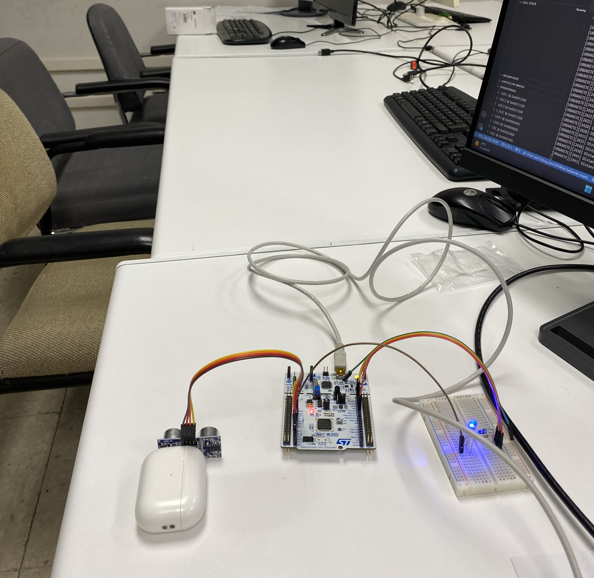
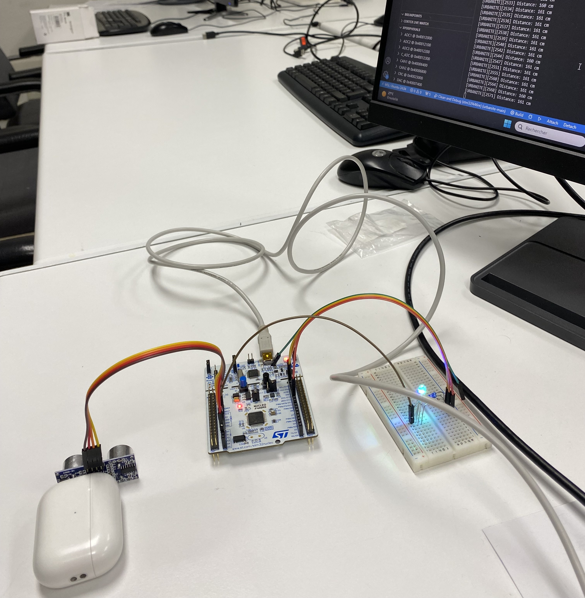
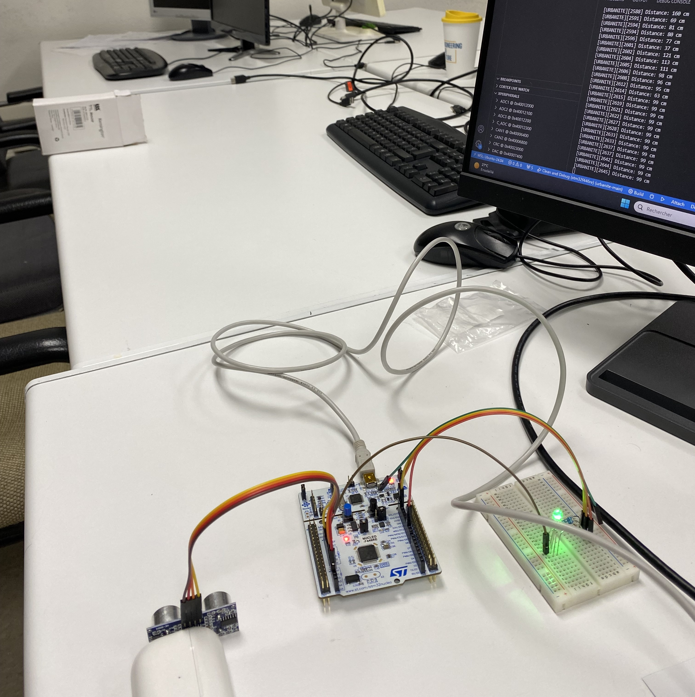
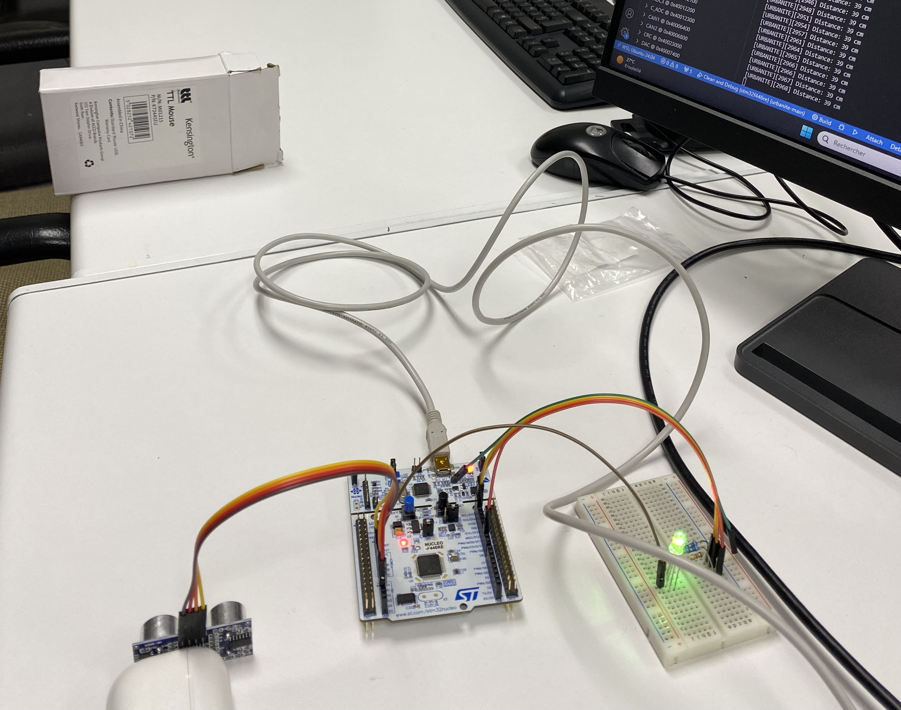
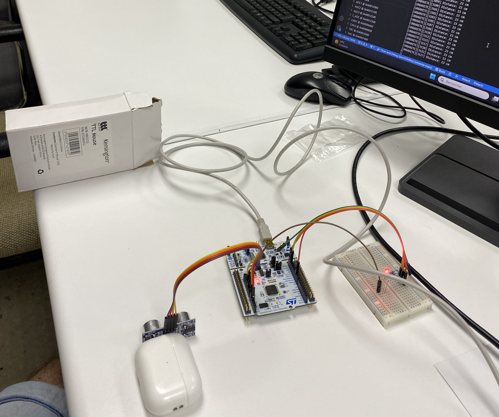
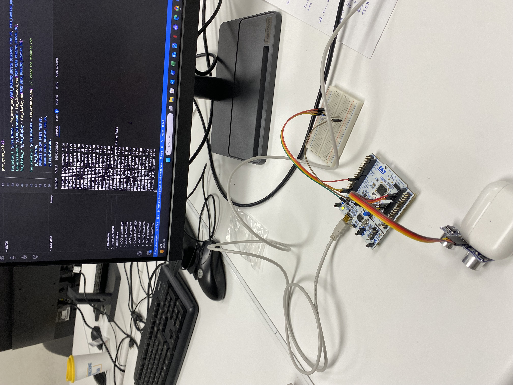
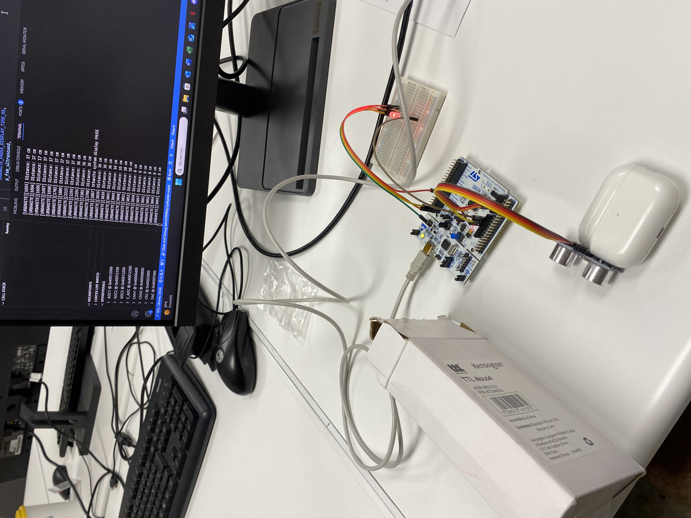

- Generated by
 1.9.8
1.9.8
|
Urbanite Project
|
The Urbanite project implements a modular parking assistance system using state machines (FSMs) on STM32 microcontrollers. The system is composed of independent FSMs for handling the button, ultrasound sensor, and RGB display, as well as an integrated FSM called fsm_urbanite which coordinates all components.
The folder docs/ contains full Doxygen-generated documentation and can bee consulted at https://elioflandin.github.io/Project-Urbanite/.
Each subsystem (button, ultrasound, display) is implemented using its own FSM for clarity, reusability, and testability.
The FSMs are initialized dynamically using malloc, and their logic is centralized via fsm_fire() calls inside the while(1) loop in main.c.
Implements anti-debounce logic using a configurable debounce time.
Stores the duration of button presses for interpreting user intent.
Long presses toggle the system ON/OFF.
Short presses pause or resume the display output.
Triggers distance measurements using a transducer and processes the received echo.
Produces new measurement data when available, communicated to the main FSM.
Displays color-coded distances using an RGB LED:
safe distance (between 200 and 175 cm),INFO (between 175 and 150 cm),NO PROBLEM (between 150 and 50 cm),WARNING (between 50 and 25 cm),DANGER (<25 cm).Reacts to pause commands and can turn off or freeze based on user input (button).
Manages overall behavior of the system including ON/OFF state, pause functionality, and transitions to/from low-power mode.
Integrates all subsystems via pointer-based references.
Handles activity detection across subsystems to determine if the system should enter sleep mode.
Uses a transition table for clarity and maintainability.
Entered through specific states in the main FSM (e.g., `SLEEP_WHILE_ON`, `SLEEP_WHILE_OFF`).
Implements `__WFI()` to wait for interrupts and reduce power usage.
Easily testable via debugger or current measurement.
The FSM was thoroughly tested with a real circuit using a Nucleo STM32F4re board.
Full integration was achieved in `main.c`, with all subsystems interacting correctly.
Proper hardware abstraction was maintained using port_* functions.
Extensive logging and LED display behavior were verified in paused and active states.
A local Doxygen documentation was generated in the `docs/` folder, and GitHub Pages was configured to allow online access to the full API documentation.







Ponga una breve descripción del proyecto **aquí** en castellano e inglés.
Puede añadir una imagen de portada **de su propiedad** aquí. Por ejemplo, del montaje final, o una captura de osciloscopio, etc.
**Las imágenes se deben guardar en la carpeta `docs/assets/imgs/` y se pueden incluir en el documento de la siguiente manera:**
NOTA: **NO** añada el código ```markdown``` en el fichero `README.md` de su proyecto, sino lo de dentro. Este código es un para mostrar de forma literal cómo se puede añadir una imagen al fichero `README.md`.
**Añada un enlace a un vídeo público de su propiedad aquí con la demostración del proyecto explicando lo que haya hecho en la versión V5.**
Para añadir un enlace a un vídeo de Youtube, puede usar el siguiente código:
NOTA: **NO** añada el código ```markdown``` sino lo de dentro. Este código es un para mostrar de forma literal cómo se puede añadir un enlace a un vídeo de Youtube al fichero `README.md`.
Breve descripción de la versión 1.
Para añadir subsecciones se usa el símbolo `#` de manera consecutiva. Por ejemplo:
Breve descripción de la subsección 1.
Para añadir una lista de elementos se usa el símbolo `-` de manera consecutiva. Por ejemplo:
Para añadir una lista de elementos numerados se usa el símbolo `1.` de manera consecutiva. Por ejemplo:
Para añadir un enlace a una página web se usa el siguiente código:
NOTA: **NO** añada el código ```markdown``` sino lo de dentro. Este código es un para mostrar de forma literal cómo se puede añadir un enlace a una página web al fichero `README.md`.
Puede añadir tablas de la siguiente manera:
| Columna 1 | Columna 2 | Columna 3 |
|---|---|---|
| Valor 1 | Valor 2 | Valor 3 |
| Valor 4 | Valor 5 | Valor 6 |
Para añadir un enlace a un fichero .c o .h puede usar el siguiente código. Se trata de enlaces a ficheros .html que se generan automáticamente con la documentación del código al ejecutar Doxygen y que se encuentran en la carpeta docs/html/.
NOTA: NO añada el código markdown sino lo de dentro. Este código es un para mostrar de forma literal cómo se puede añadir un enlace a un fichero .c o .h al fichero README.md.